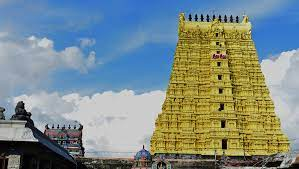
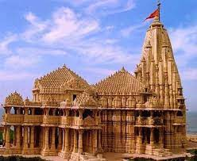
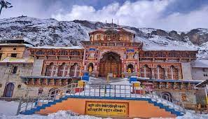
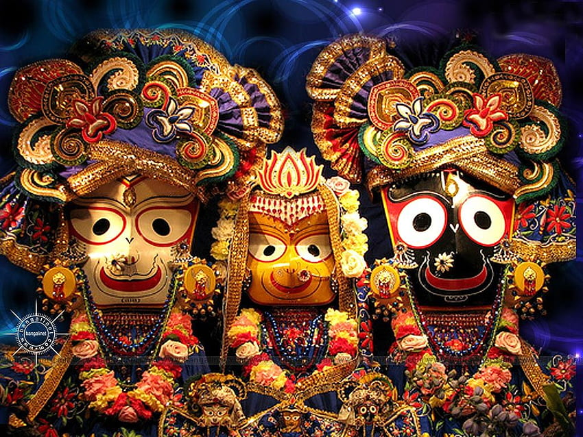

Jagannatha Temple,Puri,Odisha
From Wikipedia, the free encyclopedia
"Jagannath Temple" redirects here. For other uses, see Jagannath Temple (disambiguation).
This article needs additional citations for verification. Please help improve this article by adding citations to reliable sources. Unsourced material may be challenged and removed.
Find sources: "Jagannath Temple, Puri" – news · newspapers · books · scholar · JSTOR (March 2022) ( Learn how and when to remove this template message )
Jagannath Temple, Puri

Religion
Location
Location in Odisha
Architecture
Specifications
Website
The Jagannath Temple is an important Hindu temple dedicated to Jagannath, a form of Vishnu–one of the trinity of supreme divinity in Hinduism. It is located in Puri in the state of Odisha, situated on the eastern coast of India. King Indradyumna of Avanti built the main temple of Jagannath at Puri.[2] The present temple was rebuilt from the tenth century onwards, on the site of the pre-existing temples in the compound, but not the main Jagannath temple, and begun by Anantavarman Chodaganga, the first king of the Eastern Ganga dynasty.[3] Many rumours are spread about the temple's origin, but there is no solid evidence of it.[4] The temple is one of the 108 Abhimana Kshethram of the Vaishnavite tradition.
The temple is famous for its annual Ratha Yatra, or chariot festival, in which the three principal deities are pulled on huge and elaborately decorated raths, or temple cars. The worship is performed by the Bhil Sabar tribal priests, as well as priests of other communities in the temple.[5] Unlike the stone and metal icons found in most Hindu temples, the image of Jagannath is made of wood, and is ceremoniously replaced every 12 or 19 years by an exact replica.[6] The temple is one of the Char Dham pilgrimage sites. It is also famous because many legends believe that Krishna's heart was placed here, and the material that it is made from damages the heart, so they have to change it every seven years.[7]
The temple is sacred to all Hindus, and especially in those of the Vaishnava traditions. Many great Vaishnava saints, such as Ramanujacharya, Madhvacharya, Nimbarkacharya, Vallabhacharya and Ramananda were closely associated with the temple.[8][9] Ramanuja established the Emar Matha in the south-eastern corner of the temple, and Adi Shankaracharya established the Govardhan Math, which is the seat of one of the four Shankaracharyas. It is also of particular significance to the followers of Gaudiya Vaishnavism, whose founder, Chaitanya Mahaprabhu, was attracted to the deity, Jagannath, and lived in Puri for many years.[10][11]
History
The temple was rebuilt by the King of the Eastern Ganga dynasty, Anantavarman Chodaganga, in the 10th century CE, as described by the Kendupatna copper-plate inscription of his descendant, Narasimhadeva II.[1] Anantavarman was originally a Shaivite, and became a Vaishnavite sometime after he conquered the Utkala region, in which the temple is located, in 1112 CE. A 1134–1135 CE inscription records his donation to the temple. Therefore, the temple construction must have started sometime after 1112 CE.[12]
According to a story in the temple chronicles, it was founded by Anangabhimadeva II. Different chronicles variously mention the year of construction as 1196, 1197, 1205, 1216, or 1226.[13] This suggests that the temple's construction was completed or that the temple was renovated during the reign of Anantavarman's son, Anangabhima.[14] The temple complex was further developed during the reigns of the subsequent kings, including those of the Ganga dynasty and the Gajapati dynasty.[15]
Deities
Jagannath, Subhadra and Balabhadra are a trio of deities worshipped at the temple. The inner sanctum of the temple contains the deities of them carved from sacred neem logs, known as daru sitting on the bejewelled platform or ratnabedi, along with the deities of Sudarshana Chakra, Madanmohan, Sridevi and Vishwadhatri.[16] The deities are adorned with different clothing and jewels according to the season. Worship of these deities predates the building of the temple, and may have originated in an ancient tribal shrine.[17]
Legends
According to legend, the construction of the first Jagannath temple was commissioned by King Indradyumna, son of Bharata and Sunanda, and a Malava king, mentioned in the Mahabharata and the Puranas.[18]
Indradyumna's prayer to Brahma
Legend surrounding the temple's origin
The traditional story concerning the origins of the Jagannath temple is that the original image of Jagannath, a form of Vishnu, at the end of the Dvapara Yuga, was manifested near a banyan tree, near the shore in the form of an Indranila Mani, or the Blue Jewel. It was so dazzling that it could grant an instant moksha, so the deity, Dharma or Yama, wanted to hide it in the earth, and was successful. In the Kali Yuga, King Indradyumna of Malwa wanted to find that mysterious image, and to do so, he performed harsh penance to obtain his goal. Vishnu then instructed him to go to the seashore of Puri, and find a floating log to make an image from its trunk.[20][21
Then, Indradyumna found the log of wood. He did a yajna, from which Nrisimha appeared and instructed that Narayana should be made as a four-fold expansion, i.e., Paramatma as Vasudeva, his Vyuha as Samkarshana, his Yogamaya as Subhadra, and his Vibhava as Sudarshana. After this, Vishwakarma appeared in the form of an artisan and prepared images of Jagannath, Balarama and Subhadra from the tree.[22]
When this log, radiant with light, was seen floating in the sea, Narada told the king to make three deities out of it and place them in a pavilion. Indradyumna got Vishwakarma, the architect of gods, to build a magnificent temple to house the deities, and Vishnu himself appeared in the guise of a carpenter to make the deities, on condition that he was to be left undisturbed until he finished the work.[20][23]
But just after two weeks, the queen, i.e., spouse of Indradyumna became very anxious. She took the carpenter to be dead as no sound came from the temple. Therefore, she requested the king to open the door. Thus, they went to see Vishnu at work, at which the latter abandoned his work, leaving the deities unfinished. The deity was devoid of any hands. But a divine voice told Indradyumna to install them in the temple. It has also been widely believed that in spite of the deity being without hands, it can watch over the world and be its lord. Thus, the idiom.[20][23]
Invasions and desecrations of the Temple
The temple annals, the Madala Panji, records that the Jagannath temple has been invaded and plundered eighteen times.[24]
Entry and Darshan
Jagannath Temple

Rameswaram Tample
Dwarka
Badrinath
Non-Hindus, (excluding Jains, Sikhs, Buddhists) foreigners are not permitted to enter the temple.[25][26] However, Guru Nanak Dev, the founder of Sikhism, visited the temple in 1506. Such a rule is believed to exist ever since the temple was built, and at present, it often becomes a subject to controversy and debates that have lasted for several decades.[27][28][29] According to Ganeshi Lal, the former Governor of Odisha, foreigners can enter the temple only if he/she can meet the Gajapati servitors and the Shankaracharya, then he/she could also be allowed to witness the Chakanayana, another name of Lord Jagannath. But, this theory has not wielded influence yet, and continues to be a subject of longstanding debate.[30] The temple is open everyday from 5:00 am to 10:30 pm.[31]
Cultural integrity
Starting from Jagannath himself, history has it that he was a tribal deity, adorned by the Bhils and Sabar people, as a symbol of Narayana. Another legend claims him to be Nilamadhava, an image of Narayana made of blue stone and worshipped by the tribals. He was brought to Nilagiri, theblue mountain, or Nilachala, and installed there as Jagannath, in company with Balabhadra and Subhadra. The images made of wood are also claimed to have their distant linkage with the Vanvasis, or forest dwellers, as a system of worshipping wooden poles. To cap it all, the Daitapatis, who have a fair share of responsibilities to perform rituals of the temple, are claimed to be descendants of the hill tribes of Odisha, also believed to be a close relative of Jagannath. Hence, the beginning of the cultural history of Shrikshetra, known as the cultural capital of Odisha is found in the cultures of Hindu tribes. The three deities came to be claimed as the symbols of Samyak Darshan, Samyak Jnana and Samyak Charita, usually regarded as Ratnatraya, the triple gems of the Jain culture, assimilation of which leads to omniscience and Moksha (salvation).[32]
Acharyas and Jagannatha Puri
All of the renowned acharyas, including Madhvacharya, have been known to visit this kshetra. Adi Shankaracharya established his Govardhan Math here. Guru Nanak had visited this place with his disciples, Bala and Manda. Chaitanya Mahaprabhu of Gaudiya Vaishnavism stayed here for 24 years, declaring that the love of God can be spread by chanting the Hare Krishna mantra. Vallabha visited the temple and performed a 7-day recitation of the Srimad Bhagavata. His sitting place is still famous as his baithakji, literally translating to his seat. It confirms his visit to Puri.[33]
Some of the pandits who participated became jealous of the young Vallabha, and wanted to test him. The next day was Ekadashi, a fasting day where one must fast from grains. The pandits gave Vallabha rice prasad of Lord Jagannath, for which the temple is still famous. If Vallabha ate it, he would break his vow of fasting, but, if he did not take it, he would disrespect Jagannath. Hence, Vallabha, with all honour and respect, accepted the prasad in his hand. He stood there in the temple, spent the rest of the day and night, explaining the shlokas of the greatness of prasad, and ate the prasad the next morning after sunrise.[34]
The Sikh aarti, Gagan mein thaal, was recited by the first Sikh guru, Guru Nanak, in 1506 or 1508,[35][36][37][38] during his journey, called udasi, to east India,[36][37] at the revered Jagannath Temple, Puri. This aarti is only sung, not performed with any platter and/or lamps, etc.
Char Dham
The temple is one of the holiest Vaishnava Hindu Char Dham sites, the four divine pilgrimage sites, the other being Rameswaram, Badrinath and Dwarka.[39] Though the origins are not clearly known, the Advaita school of Hinduism propagated by Adi Shankaracharya, who created Hindu monastic institutions across India, attributes the origin of Char Dham to the seer.[40] The four temples lie across the four cardinal points, or four corners of India, and their attendant temples are Badrinath Temple at Badrinath in the north, Jagannath Temple at Puri in the east, Dwarakadheesh Temple at Dwarka in the west and Ramanathaswamy Temple at Rameswaram in the south. Though ideologically, the temples are divided between the sects of Hinduism, namely Shaivism and Vaishnavism, the four pilgrimage sites are fully Hinduism.[41] There are four abodes in the Himalayas, called Chota Char Dham (lit. "the small four abodes/seats"): Badrinath, Kedarnath, Gangotri and Yamunotri – all of these lie at the foothills of the Himalayas, in the state of Uttarakhand.[citation needed] The journey across the four cardinal points of India is considered sacred by Hindus, who aspire to visit these temples at least once in their lifetime. Traditionally, the trip starts at the eastern end from Puri, proceeding in a clockwise direction, in a manner typically followed for circumambulation in Hindu temples.[42]
Structure
The temple complex covers an area of over 37,000 square metres (400,000 sq ft), and is surrounded by high fortified wall. This 6.1 metres (20 ft)-high wall is known as Meghanada Pacheri.[43] Another wall known as kurma bedha surrounds the main temple.[44] It contains at least 120 temples and shrines. With its sculptural richness and fluidity of the Kalinga architecture, it is one of the most magnificent temples of India.[45] The temple has four distinct sectional structures, namely–Deula, Vimana or Garbhagriha (sanctum sanctorum), where the triad deities are lodged on the ratnavedi, or throne of pearls. In Rekha Deula style, there is the Mukhashala, (frontal porch), the Natamandapa, also known as the Jagamohan (audience/dancing hall), and the Bhogamandapa (offerings hall).[46] The main temple is a curvilinear temple, and crowning the top is the Neelachakra, an eight-spoked wheel of Vishnu. It is made out of Ashtadhatu, an alloy of eight metals, and is considered sacrosanct.[47] Among the existing temples in Odisha, the temple of Lord Jagannath is the highest. The temple tower was built on a raised platform of stone, rising to a height 65 metres (214 ft), above the inner sanctum where the deities reside, dominates the surrounding landscape. The pyramidal roofs of the surrounding temples and adjoining halls, or mandapas, rise in steps toward the tower, like a ridge of mountain peaks.[48]
Nila Chakra
The Nila Chakra (lit. blue discus) is the discus mounted on the top of the shikhara of the Jagannath temple. As per custom, everyday a different flag is waved on the Nila Chakra. The flag hoisted on the Nila Chakra is called the Patita Pavana (lit. "Purifier of the Fallen"), and is equivalent to the image of the deities placed in the sanctum sanctorum.[49]
The Nila Chakra is a disc with eight Navagunjaras carved on the outer circumference, with all facing towards the flagpost above. It is made up of Ashtadhatu and is 3.5 metres (11 ft) high, with a circumference of about 11 metres (36 ft).[50]
The Singhadwara
The Singhadwara, which in Sanskrit means "The Lion Gate", is one of the four gates to the temple, and forms the main entrance. The Singhadwara is so named because of two huge statues of crouching lions existing on either side of the entrance. The gate faces eastward, opening on to the Bada Danda or the "Grand Road".[51] The Baisi Pahacha, or the flight of twenty-two steps, leads into the temple complex. A deity of Jagannath known as Patita Pavana, which in Sanskrit means the "saviour of the downtrodden and the fallen", is painted on the right side of the entrance. In ancient times, when untouchables were not allowed inside the temple, they could pray to the Patita Pavana. The statues of the two guards to the temple, Jaya and Vijaya, stand on either side of the doorway.[52] Just before the commencement of the Ratha Yatra, the deities of Jagannath, Balabhadra and Subhadra are taken out of the temple through this gate. On their return from the Gundicha Temple, they have to ceremonially placate Goddess Lakshmi, whose deity is carved atop the door, for neglecting to take her with them on the Yatra. Only then, the goddess allows them permission to enter the temple. A magnificent sixteen-sided monolithic pillar, known as the Aruna Stambha, stands in front of the main gate. This pillar has an idol of Aruna, the charioteer of the sun god, Surya, on its top. One notable fact about the Aruna Stambha is that prior to its current location, it was located in the Konark Sun Temple.[53][54] Later, the Maratha guru, Brahmachari Gosain, brought this pillar from Konark.[55]
The Mandapas
There are many mandapas, or pillared halls on raised platforms within the temple complex meant for religious congregations. The most prominent is the Mukti Mandapa, the congregation hall of the holy seat of selected literate Brahmins.[56]
Daily food offerings
Main article: Mahaprasad (Jagannath Temple)
Daily offerings are made to the deity six times a day. These include:
- The offering to the deity in the morning that forms his breakfast, and is called Gopala Vallabha Bhoga. It consists of seven items i.e., Khoa, Lahuni, sweetened coconut grating, coconut water, and popcorn sweetened with sugar known as Khai, curd and ripe bananas.
- The Sakala Dhupa forms his next offering at about 10 am. This generally consists of 13 items, including the Enduri pitha and the Mantha puli.
- The Bada Sankhudi Bhoga forms the next offering, consisting of Pakhala with curd and Kanji payas. The offerings are made in the Bhog Mandapa, about 61 metres (200 ft) from the Ratnabedi. This is called the Chatra Bhog, which was introduced by Adi Shankaracharya in the eighth century to help pilgrims share the temple food.
- The Madhyanha dhupa forms the next offering at the noon.
- The next offering to the deity is made in the evening at around 8 pm, known as Sandhya Dhupa.
- The last offering to the deity is called the Bada Singhara Bhoga.[57]
Rosaghara
Main article:
The temple's kitchen is the second largest in the world.[45][58][59][60] Tradition holds that all the Mahaprasad that is cooked in the temple kitchen is supervised by Goddess Lakshmi, the empress of the temple herself, and that if the food prepared has any fault in it, a shadow dog appears near the temple kitchen, a sign of her displeasure. If the shadow dog is seen, the food is promptly buried and a new batch is cooked.[61] All 56 varieties of food produced are vegetarian and prepared without onions and garlic, as prescribed by the Manusmriti.[62]
Festivals
Main article: List of festivals observed at Jagannatha Temple, Puri
There are elaborate daily worship services. There are many festivals each year attended by millions of people. The most important festival is the Ratha Yatra, or the chariot festival, in June or July. This spectacular festival includes a procession of three huge raths, or chariots, bearing the deities of Jagannath, Balabhadra and Subhadra through the Bada Danda, or the Grand Avenue of Puri, until their final destination to the Gundicha Temple.[63] Others are Pana Sankranti, also known as Vishuva Sankranti and Mesha and Sankranti, in which special rituals are performed at the temple.[64]
Anavasara or Anasara
Main article: Snana Yatra
Every year, the main deities of Jagannath, Balabhadra, Subhadra and Sudarshan, after the holy Snana Yatra on the Jyeshtha Purnima, go to a secret altar, named Anavasara Ghar, where they remain for the next dark fortnight, or Krishna paksha. Hence, devotees are not allowed to view them. So devotees worship at the nearby temple of Alarnath at Brahmagiri, an icon of a four-handed Vishnu, as a manifestation of Jagannath.[65] Devotees get the first glimpse of the deities on the day before Ratha Yatra, which is called Navayouvana. It is said that the deities fall in fever after taking a huge bath, and they are treated by the special servants, named Daitapatis, for 15 days. During this period, cooked food is not offered to the deities.[66]
Aruna Stambha

Statue of Aruna, the charioteer of Surya, the Sun God, on top of the Aruna Stambha in front of the Singhadwara.
Ratha Yatra at Puri
Main article: Ratha Yatra (Puri)
The Jagannath triad are usually worshipped in the sanctum sanctorum of the temple at Puri, but during the month of Ashadha, or the monsoon month, usually falling in month of June or July, they are brought out onto the Bada Danda, or the divinity street, and travel (3 km) to the Gundicha Temple, in huge chariots, or raths, allowing the public to have the Darshana, or the holy view of the deities. This festival is known as Ratha Yatra, meaning the journey (yatra) of the chariots (raths). The Rathas are huge wheeled wooden structures, which are built anew every year and are pulled by the devotees with ropes. The chariot for Jagannath is approximately 14 metres (45 ft) high and 11 metres (35 ft) wide, and takes about 2 months to construct.[67] The artists and painters of Puri decorate the cars and paint flower petals and other designs on the wheels, the wood-carved charioteer and horses, and the inverted lotuses on the wall behind the throne.[68] The huge chariots of Jagannath pulled during Ratha Yatra is the etymological origin of the English word 'Juggernaut'.[69] The Ratha Yatra is also termed as Shri Gundicha Yatra.[70]
The most significant ritual associated with Ratha Yatra is the Chhera Pahara (lit. sweeping with water). During the festival, the Gajapati king wears the outfit of a sweeper, and sweeps all around the deities and their chariots in the Chhera Pahara ritual. The Gajapati king cleanses the road before the chariots with a gold-handled broom, and sprinkles sandalwood water and powder with utmost devotion. As per the custom, although the Gajapati King has been considered the most exalted person in the Kalinga kingdom, he still renders the menial service to Jagannath. This ritual signified that under the lordship of Jagannath, there is no distinction between the powerful sovereign Gajapati king and the most humble devotee.[71]
The most significant ritual associated with Ratha Yatra is the Chhera Pahara (lit. sweeping with water). During the festival, the Gajapati king wears the outfit of a sweeper, and sweeps all around the deities and their chariots in the Chhera Pahara ritual. The Gajapati king cleanses the road before the chariots with a gold-handled broom, and sprinkles sandalwood water and powder with utmost devotion. As per the custom, although the Gajapati King has been considered the most exalted person in the Kalinga kingdom, he still renders the menial service to Jagannath. This ritual signified that under the lordship of Jagannath, there is no distinction between the powerful sovereign Gajapati king and the most humble devotee.[71]
Ratha Yatra

The Ratha Yatra in Puri in modern times, showing the three raths chariots of the deities with the temple in the background
Niladri Bije
Celebrated on Ashadha Trayodashi,[76] Niladri Bije is the concluding day of Ratha Yatra. On this day, deities return to the Ratnabedi.[77][78] Here, Jagannath offers Rasgulla to Goddess Lakshmi to enter into the temple.[79][80]
Gupta Gundicha
It is celebrated for 16 days from Ashwin month's Krishna dwitiya to Vijayadashami.[81] As per tradition, Madhava, along with Durga, (known as Durgamadhaba), is taken on a tour of the temple premises. The tour within the temple is observed for the first eight days. For the next eight days, the deities are taken outside the temple on a palanquin to the nearby Narayani temple situated in the Dola mandapa lane. After their worship, they are brought back to the temple.[82]
jagannath
Jagannath during Ratha Yatra,
Nabakalebara
Main article: Nabakalevara
Nabakalabera is a ritual associated with Jagannath,[83] which takes place every 8, 12 or 19 years, when one lunar month of Ashadha is followed by another lunar month of Ashadha. Meaning "New Body", the ritual involves installation of new images in the Jagannath Temple and the burial of the old images at the temple at Koili Vaikuntha. The festival is witnessed by millions of people and its budget exceeds ₹41,000,000 (US$510,000).[84] More than three million devotees are estimated to have visited the temple during the Nabakalevara in 2015, making it one of the most visited festivals in the world.[85]
Management
After independence, the Government of Odisha, with a view to getting better administrative system, passed "The Puri Shri Jagannath Temple (Administration) Act, 1952".[86]
Dibyasingha Deba, the incumbent Gajapati king and King of Puri, is the current adhyasevak (chief servitor) of the temple.[87][88] He took the role in 1970 at the age of 17, after the death of his father, Birakishore Deb, then King of Puri.[89]
Security
The security at the temple has increased ahead of Ratha Yatra, the homecoming festival of the deities of Jagannath temple. In the wake of terror alert on 27 June 2012, the security forces were increased to ensure smooth functioning of the crowded Ratha Yatra and Suna Besha.[90] As part of the modernisation of the temple premises and surroundings, the temple's security force has been further advanced, such as 44 police platoons with 30 police officers each, and 135 CCTV cameras with advanced face-scanning technology have been installed in the premises, to cater to more pilgrims and visitors and provide them with enhanced security.[91]
Shree Jagannath Heritage Corridor
Main article: Shree Jagannath Heritage Corridor, Puri
The "Shree Mandir Parikrama", also known as the Shree Jagannath Heritage Corridor (SJHC), is a 75 metre-long corridor around the Jagannath temple. It has been built to provide expansive and unobstructed corridors around the Meghanad Pacheri for giving an opportunity to devotees and pilgrims to have better darshan with the Temple, Nila Chakra and Meghanad Pacheri, similar to the Kashi Vishwanath Corridor of the Kashi Vishwanath Temple in Varanasi. The corridor provides several facilities and amenities for giving pilgrims and visitors a hassle-free and memorable experience, and for strengthening safety and security of the temple and the devotees.[92] Construction began on the corridor after Chief Minister Naveen Patnaik and the incumbent King of the Gajapati Empire and of Puri, as well as the adhyasevak, or the chief servitor of the Jagannath temple, Dibyasingha Deba, laid the foundation stone for it in November 2021.[93] It was inaugurated and opened to the public by Chief Minister Naveen Patnaik and King Dibyasingha Deba on 17 January 2024.[94]
See also
- History of Odisha
- List of historic sites in Odisha
- Jagannath
- Indradyumna
- Char Dham
- Chota Char Dham
- Vaishnavism
- Chanakya
- Guru Nanak
- Kalinga architecture
- Gajapati Empire
- Dibyasingha Deba
- Archaeological Survey of India
- Shree Jagannath Heritage Corridor, Puri
- Konark Sun Temple
- Lingaraj Temple
- Kashi Vishwanath temple
- Chari Kshetra
References
- Suryanarayan Das 2010, pp. 49–50.
- Chakraborty, Yogabrata (28 June 2023). "পুরীধাম ও জগন্নাথদেবের ব্রহ্মরূপ বৃত্তান্ত" [Puridham and the tale of lord Jagannath's legendary 'Bramharup']. dainikstatesmannews.com (in Bengali). Kolkata: Dainik Statesman (The Statesman Group). p. 4. Archived from the original on 28 June 2023. Retrieved 28 June 2023.
- Cesarone, Bernard (2012). "Bernard Cesarone: Pata-chitras of Odisha". asianart.com. Retrieved 2 July 2012. This temple was built in approximately 1135–1150 by Codaganga, a king of the Eastern Ganga dynasty
- Munjal, Diksha (24 May 2022). "Explained - What is the controversy around Odisha's Jagannath temple Heritage Corridor Project?". The Hindu. Retrieved 28 May 2023.
- Sharma, Dr Chandrapal (21 July 2020). Ank Chakra : Indian Culture and Basic Numbers. Diamond Pocket Books Pvt Ltd. ISBN 978-93-90287-27-7.
- Nugteren, Albertina (2010). "Weaving Nature into Myth: Continuing Narratives Of Wood, Trees, And Forests In The Ritual Fabric Around The God Jagannath In Puri". Journal for the Study of Religion, Nature and Culture. 4 (2): 159–172. doi:10.1558/jsrnc.v4i2.159.
- Gautam, Mitali (7 November 2022). "Thus Lord Krishna's amazing heart lived on for posterity". The Statesman. Retrieved 13 December 2023.
- Balaram Mohanty (1979). Introducing Orissa. Konarka Prakasani. p. 84.
- Swami B. P. Puri (1 August 2017). Guru: The Universal Teacher. Simon and Schuster. p. 297. ISBN 9781683832454.
- K. V. Raman (2006). Temple Art, Icons and Culture of India and South-East Asia. Sharada Publishing House. p. 138. ISBN 9788188934317. Similarly, places like Srirangam associated with Ramanuja, Udupi (in Karnataka) with Madhvacharya, Pandharpur with the Maharashtra saints like Jnanesvar and Tukaram and Puri Jagannath with Chaitanya Mahaprabhu.
- Swami Prabhavananda (9 April 2019). The Spiritual Heritage of India. Routledge. p. 292. ISBN 9780429627552.
- Suryanarayan Das 2010, p. 50.
- Suryanarayan Das 2010, pp. 50–51.
- Suryanarayan Das 2010, p. 51.
- Suryanarayan Das 2010, pp. 51–52.
- "Deities in Lord Jagannath Temple – Jagannath Temple". jagannathtemplepuri.com. 2012. Retrieved 26 June 2012. along with Balabhadra, Subhadra, Sudarshan, Madhaba, Sridevi and Bhudevi on the Ratnabedi or the bejewelled platform.
- "Juggernaut of Puri". Retrieved 20 September 2006.
- "Juggernaut of Puri". Retrieved 20 September 2006.
- "Sri Jagannath Puri Dham Information – Jagannath". jagannathpuri-info.net. 2012. Archived from the original on 4 July 2012. Retrieved 26 June 2012. The King wanted Lord Brahma to consecrate the temple
- "Sri Jagannath Puri Dham Information – Jagannath". jagannathpuri-info.net. 2012. Archived from the original on 4 July 2012. Retrieved 26 June 2012. The King wanted Lord Brahma to consecrate the temple
- Patra, Avinash (23 June 2011). Origin & Antiquity of the Cult of Lord Jagannath. Oxford University Press.
- Jagannath Temple at Puri". Retrieved 12 September 2006.
- Das, Suryanarayan (2010). Lord Jagannath. Sanbun Publishers. pp. 42–44. ISBN 978-93-80213-22-4.
- Dash, Abhimanyu (July 2011). "Invasions on the Temple of Lord Jagannath, Puri" (PDF). Orissa Review: 82–89. Archived from the original (PDF) on 14 July 2014. Retrieved 4 July 2014.
- https://magazines.odisha.gov.in/Orissareview/2014/Jun/engpdf/85-89.pdf
- "Jagannatha — — the Jain Connection". 7 January 2018
- https://magazines.odisha.gov.in/Orissareview/2009/June/engpdf/107-108.pdf
- Puri temple in Hindu gaffe Archived 4 March 2016 at the Wayback Machine, The Telegraph, Calcutta – 8 November 2007
- "Jagannatha Puri". Archived from the original on 15 July 2006. Retrieved 12 September 2006.
- Bisoyi, Sujit (24 January 2023). "Puri's Jagannath Temple: Why non-Hindus and foreigners can't enter here". The Indian Express. Retrieved 13 January 2024.
- "Jagannath Darshan". http://jagannath.nic.in. Jagannath Temple Administration. Archived from the original on 5 March 2013. Retrieved 27 June 2014.
- Barak, Pabitra Mohan (July 2005). "Jainism and Buddhism in Jagannath Culture" (PDF). magazines.odisha.gov.in. Retrieved 30 September 2023.
- "Shrikshetra: A Replica of Indian Culture" (PDF). Archived from the original (PDF) on 10 April 2009. Retrieved 8 March 2010
- "Shri Mad Vallabhacharya Mahaprabhuji | Shrinathji Temple, Nathdwara". www.nathdwaratemple.org. Retrieved 25 September 2021.
- "गुरु नानक देव और उनके द्वारा प्रवर्तित मार्ग". Hindustan (in Hindi). 7 November 2011. Retrieved 22 June 2023.
- "Orissa Review – Feb–March 2012" (PDF). orissa.gov.in. Retrieved 12 March 2022.
- "Home" (PDF). 13 November 2013. Archived from the original (PDF) on 4 March 2016. Retrieved 28 September 2023.
- "Shree Guru Granth Sahib Ji". sikh-heritage.co.uk. Retrieved 22 June 2023.
- Mahadev Chakravarti 1986, p. 140.
- Mittal, Sushil (2004). The Hindu World. New York: Routledge. p. 482. ISBN 0-203-64470-0.
- Norbert C. Brockman 2011, pp. 94–96.
- Paul Gwynne 2017, p. 296.
- "About Sakhigopal". samsepuja.in. 2012. Archived from the original on 24 February 2015. Retrieved 26 June 2012. The outermost is called 'Meghanad Pacheri' which has a length of 650ft from east to west and breadth of 644ft from north to south direction. The height of Meghanad Pacheri is 20ft and thickness of 6ft
- "Lord Jagannath:Inside the temple of the lord, Jagannath Puri, Jagannath Temple, Orissa". orissa.oriyaonline.com. 2012. Archived from the original on 27 May 2012. Retrieved 26 June 2012. and kurma Bedha (the inner wall) or the inner enclosure of the Jagannath temple i
- "Sri Jagannath". Archived from the original on 24 July 2008. Retrieved 12 September 2006.
- "Jagannath Temple, India – 7 wonders". 7wonders.org. 2012. Retrieved 2 July 2012. The temple is divided into four chambers: Bhogmandir, Natamandir, Jagamohana and Deul
- "Architecture of Jagannath Temple, Jagannath Puri Architecture, Puri Jagannath Temple India". orissatourism.org. 2012. Archived from the original on 12 October 2012. Retrieved 2 July 2012. wheel on top of the Jagannath Temple made of an alloy of eight metals (astadhatu). It is called the Nila Chakra (Blue Wheel)
- "Jagannath Temple, Orrisa". Archived from the original on 17 May 2008. Retrieved 20 September 2006.
- "Jagannatha's British 'Guardian'" (PDF). Archived from the original (PDF) on 3 March 2016. Retrieved 15 August 2014.
- Nilachakra is now repairing by Archaeological Survey of India — PURIWAVES | PURIWAVES | photonews || puri odisha || purinews || | Nilachakra is now repairing by Archaeological... Archived 12 March 2016 at the Wayback Machine
- "About Temple – Devotee Care Center". devoteecare.fullorissa.com. 2012. Retrieved 28 September 2012. Two colossal lions flank the Purba Dwara (Eastern Gate) also known as Singha Dwara. This is a mini tower and the main entrance to the temple[dead link]
- "Sri Jagannath Temple". Archived from the original on 24 July 2008. Retrieved 20 September 2006.
- "Main Temple Complex – Sun Temple, Konarak – Archaeological Survey of India". asi.nic.in. 2011. Archived from the original on 8 November 2012. Retrieved 5 October 2012. To the front of the eastern staircase of the porch, once stood the free-standing chlorite pillar, the dhvaja-stambha, with Aruna, the charioteer of Surya as the crowning element
- "Aruna Stambha | PURIWAVES". puriwaves.nirmalya.in. 2012. Archived from the original on 5 June 2013. Retrieved 5 October 2012. this Pillar was a part of Sun Temple Of Konark and was located in front of Sun Temple
- Behera, Prajna Paramita (2004). "The Pillars of Homage to Lord Jagannatha" (PDF). Orissa Review. Archived from the original (PDF) on 22 February 2014. Retrieved 5 October 2012.
- "JAGANNATH TEMPLE, SANCTUARIES, MANDAPS OF LORD JAGANNATH TEMPLE PURI". jagannath.orissaculture.com. 2009. Archived from the original on 11 July 2012. Retrieved 26 June 2012. It is allowed only for Sankaracharya, Brahmins of 16 sasans and for Jhulan yatra.
- "JAGANNATH TEMPLE, SANCTUARIES, MANDAPS OF LORD JAGANNATH TEMPLE PURI". jagannath.orissaculture.com. 2009. Archived from the original on 11 July 2012. Retrieved 26 June 2012. It is allowed only for Sankaracharya, Brahmins of 16 sasans and for Jhulan yatra.
- Karan, Jajati (2009). "God's own kitchen vies for no record – India News – IBNLive". ibnlive.in.com. Archived from the original on 28 February 2011. Retrieved 2 July 2012. the Jagannath temple in Puri has the world's largest kitchen that can feed more than one lakh people at a time
- "The Sampradaya Sun – Independent Vaisnava News – Feature Stories – June 2011". harekrsna.com. 2011. Retrieved 26 June 2012. Not only is it the largest temple kitchen in the world
- "Amazing Orissa". nilachakra.org. 2011. Archived from the original on 26 March 2011. Retrieved 2 July 2012. The Jagannath temple kitchen at Puri is reputed to be the largest kitchen in the world
- "Kitchen of Lord Jagannath – Devotee Care Center". devoteecare.fullorissa.com. 2012. Archived from the original on 18 March 2015. Retrieved 28 September 2012. If the dog is seen, all the food must be buried and prepared again
- "Jagannath Temple, Jagannath Puri, Jagannath Temple Puri, Jagannath Temple of Puri, Jagannath Temple Odisha, Jagannath Temple Orissa". visitodisha.net. 2012. Archived from the original on 26 September 2012. Retrieved 28 September 2012. The Prasad is prepared in a very traditional way, without using onion, garlic, chillies
- "Jagannath Temple at Puri". Retrieved 20 September 2006.
- "Festivals of lord jagannath, puri festivals". fullorissa.com. 2010. Archived from the original on 24 May 2015. Retrieved 16 May 2012. Pana Sankranti or Mahabishuba sankranti:
- "Alarnatha – Articles – Jagannath Dham". jagannathdham.com. 2012. Retrieved 16 May 2012. peoples believe that Lord Jagannath during this time manifests as Alarnath Dev,
- "Festivals of Lord Sri Jagannath". nilachakra.org. 2010. Archived from the original on 22 October 2012. Retrieved 16 May 2012. suffer from fever on the account of elaborate bath and for that they are kept in dietary provisions (No cooked food is served) and are nursed by the Daitas
- O. M. Starza 1993, p. 16.
- Partha Mitter 1992, p. 3.
- Partha Mitter 1992, p. 3.
- Das 1982, p. 48
- "Festivals of Lord Sri Jagannath". nilachakra.org. 2010. Archived from the original on 22 October 2012. Retrieved 3 July 2012. NILADRI BIJE – Celebrated on 13th day of bright fortnight of Asadha.
- "Ocean of devotees on Grand road to witness Sunavesh". news.oneindia.in. 2012. Retrieved 3 July 2012. entering in to the sanctum sanctorum popularly called Niladri Bije
- "Niladri Bije – Lord Jagannath Returning to Shree Mandir | PURIWAVES". puriwaves.nirmalya.in. 2012. Retrieved 3 July 2012. 'Niladri Bije', the return journey to Shree Mandir. It is the welcome festival of Lord Jagannath to Shree Mandir
- "Lord Jagannath placates angry Mahalakshmi, reenters temple". The Pioneer. India. 2012. Retrieved 3 July 2012. Jagannath then offers Mahalakshmi rasgullas to placate her and to forgive him
- "Rasagola Dibasa: Day Lord Jagannath offered Goddess Laxmi Rasgulla to please her". India Today. 7 July 2017. Retrieved 30 September 2023.
- Panda, Namita (11 October 2010). "The Telegraph – Calcutta (Kolkata) | Gupta Gundicha attracts devotees". The Telegraph. Calcutta, India. Archived from the original on 19 June 2012. Retrieved 20 December 2012. Beginning from Ashwina Krishna dwitiya to the last day of Dusherra,
- "Gupta Gundicha in Srikhetra – Start of Durga Madhab worshiping | PURIWAVES". puriwaves.nirmalya.in. Retrieved 20 December 2012. The Vimanbadu servants ( who carry the chariot) carry Sri Durga – Madhab ( Sri Jagannath & Jaya Durga ) in a chariot to the temple of Narayani at Dolamandap Sahi.
- "Showing posts with label Jagannatha Nabakalebara". Divine Chariots. Archived from the original on 9 August 2019.
- "Puri gearing up for 2015 Nabakalebar". The Pioneer. India. 2011. Archived from the original on 14 July 2014. Retrieved 4 January 2013. Nabakalebar ritual of Lord Jagannath to be held in 2015,
- "Plans afoot to manage Nabakalebar crowd". The Times of India. 12 July 2014. Retrieved 13 July 2014.
- Manti, J.C. (2007). The Saga of Jagannatha and Badadeula at Puri. Sarup & Sons. p. 100. ISBN 9788176257473. Retrieved 1 July 2015.
- "Jagannath temple servitors oppose untimely ISKON Rathyatra". news.oneindia.in. 2012. Retrieved 28 September 2012. Gajapati King, who is considered as the chief servitor of the temple
- "Lord Jagannath:Sevayats, complete list of servitors of Lord Jagannath, Jagannath Puri, Jagannath Temple, Orissa". orissa.oriyaonline.com. Archived from the original on 2 November 2012. Retrieved 28 September 2012. The Gajapati (The King of Puri) is treated as the first and foremost Servitor of the Temple
- "I can walk and not take the palanquin'". The Times of India. 2011. Archived from the original on 16 February 2013. Retrieved 13 January 2013. I ascended the throne in July 1970 when my father Gajapati Birakishore Deb died in the midst of the car festival. I was then only 17
- "Terror alert in Puri, security tightened". The Times of India. 27 June 2012.
- Mohapatra, Debabrata (12 January 2024). "Iconic Puri Jagannath corridor equipped with advanced CCTV facial recognition cover". The Times of India. Retrieved 15 January 2024.
- "About Shreemandira Parikrama". Shree Jagannatha Temple Administration. Retrieved 15 January 2024.
- "Foundation stone laid for Rs 331 cr heritage corridor project in Puri". ET Infra. 17 November 2021. Retrieved 15 January 2024.
- Mohanty, Debabrata (17 January 2024). "Odisha CM Naveen Patnaik inaugurates Jagannath temple corridor project". Hindustan Times. Retrieved 18 January 2024.
- Mohapatra, Debabrata (12 January 2024). "Iconic Puri Jagannath corridor equipped with advanced CCTV facial recognition cover". The Times of India. Retrieved 15 January 2024.
Bibliography
- Avinash Patra (2011). Origin & Antiquity of the Cult of Lord Jagannath. Oxford University Press.
- Das, J. P. (1982). Puri Paintings: The Chitrakara and His Work. Prafulla. ISBN 978-81-901589-7-8.
- Mahadev Chakravarti (1986). The Concept of Rudra-Śiva Through the Ages. Motilal Banarsidass. ISBN 978-81-208-0053-3.
- Norbert C. Brockman (2011). Encyclopedia of Sacred Places. California: ABC-CLIO. ISBN 978-1-59884-655-3.
- O. M. Starza (1993). The Jagannatha Temple at Puri: Its Architecture, Art, and Cult. BRILL. ISBN 90-04-09673-6.
- Partha Mitter (1992). Much Maligned Monsters: A History of European Reactions to Indian Art. University of Chicago Press. ISBN 978-0-226-53239-4.
- Paul Gwynne (2017). World Religions in Practice: A Comparative Introduction. Wiley. ISBN 978-1-118-97228-1.
- Suryanarayan Das (2010). Lord Jagannath. Sanbun. ISBN 978-93-80213-22-4.
External links
- Puruṣottama-kṣetra-māhātmya, Skanda Purana
- Official website Edit this at Wikidata
- Sri Jagannath Temple – Jagannath Dharma (Official website of the Puri district administration)
- Street View around Jagannath Temple